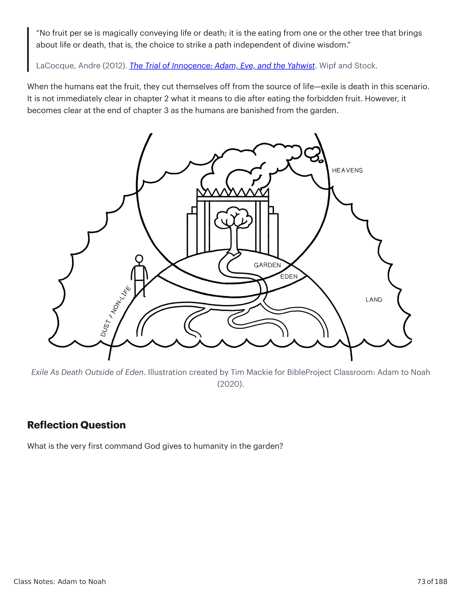

Estes dois verbos encontrados em Gênesis 2:15 estão carregados de significado, pois retratam a vocação ideal da humanidade. Vamos examinar seu significado.These two verbs found in Genesis 2:15 are packed with significance, as they portray the ideal vocation of humanity. Let's look into their meaning.
Êxodo 20:8-10 (NVI): "Lembra-te do dia do Sabbath, para o santificar. Seis dias trabalharás (abad) e farás toda a tua obra, mas o sétimo dia é o Sabbath do SENHOR, teu Deus; não farás nenhuma obra (abad) nele, nem tu, nem teu filho, nem tua filha, nem o teu servo, nem a tua serva, nem o teu animal, nem o estrangeiro que está dentro de tuas portas." 'Abad = trabalhar. Gênesis 27:29 (NAA): "Povos te servirão (abad), e nações se curvarão a ti; sê senhor de teus irmãos, e curvem-se a ti os filhos de tua mãe. Malditos sejam os que te amaldiçoarem, e benditos sejam os que te abençoarem." 'Abad = servir. Êxodo 3:12 (NVI): "E Deus disse: 'Eu serei contigo. Esta será a marca de que sou eu quem te enviou: quando tens tirado o povo do Egito, vocês servirão (abad) a Deus neste monte.'" 'Abad = adorar. Números 18:7 (NAA): "Mas tu e teus filhos contigo, vosso sacerdócio quanto a tudo que pertence ao altar e ao interior do véu, e fareis o vosso abodah." 'Abodah = serviço sacerdotal. 1 Crônicas 24:3 (NVI): "Com a ajuda de Zadoque, descendente de Eleazar, e de Aimeleque, descendente de Itamar, Davi os separou em divisões para a sua ordem designada de abodah."Exodus 20:8-10 (NIV): "Remember the Sabbath day by keeping it holy. 9 Six days you shall labor and do all your 'abad, 10 but the seventh day is a sabbath to the LORD your God. On it you shall not do any 'abad, neither you, nor your son or daughter, nor your male or female servant, nor your animals, nor any foreigner residing in your towns." 'Abad = to work. Genesis 27:29 (NASB): "May peoples 'abad you, and nations bow down to you; be master of your brothers, and may your mother's sons bow down to you. Cursed be those who curse you, and blessed be those who bless you." 'Abad = to serve. Exodus 3:12 (NIV): "And God said, 'I will be with you. And this will be the sign to you that it is I who have sent you: When you have brought the people out of Egypt, you will 'abad God on this mountain.'" 'Abad = to worship. Numbers 18:7 (NASB): "But you and your sons with you shall attend to your priesthood for everything concerning the altar and inside the veil, and you are to do your 'abodah." 'Abodah = priestly service. 1 Chronicles 24:3 (NIV): "With the help of Zadok a descendant of Eleazar and Ahimelek a descendant of Ithamar, David separated them into divisions for their appointed order of 'abodah."
A frase "servir e guardar" (shamar / שמר) refere-se a um serviço sacerdotal de adoração. Estes verbos são usados juntos como uma frase em outro lugar apenas em descrições dos sacerdotes e levitas trabalhando dentro e ao redor do templo. Números 3:5-9 (NAA): "Então o SENHOR falou a Moisés, dizendo: 'Traze a tribo de Levi perto e apresenta-os perante Arão, o sacerdote, para que o sirvam. Eles guardarão (shamar) a guarda para ele e a guarda de toda a congregação perante a tenda da congregação, para servir (abad) o abodah da tenda da congregação. Também guardarão (shamar) todos os utensílios da tenda da congregação, juntamente com os deveres dos filhos de Israel, para servir (abad) o abodah da tenda da congregação. Assim darás os levitas a Arão e a seus filhos; eles são inteiramente dados a ele dentre os filhos de Israel.'" Números 8:26 (NAA): "Mas poderão auxiliar seus irmãos na tenda da congregação, para guardar (shamar) a guarda, porém eles mesmos não servirão (abad) nenhum abodah." Números 18:7 (NAA): "Mas tu e teus filhos contigo guardarão (shamar) o vosso sacerdócio quanto a tudo que pertence ao altar e ao interior do véu, e servirão (abad) o abodah."The phrase "to serve and keep" (shamar / שמר) refers to a priestly service of worship. These verbs are used together as a phrase elsewhere only in descriptions of the priests and Levites working in and around the temple. Numbers 3:5-9 (NASB): "Then the LORD spoke to Moses, saying, 6 'Bring the tribe of Levi near and set them before Aaron the priest, that they may serve him. 7 They shall shamar the mishmeret for him and the mishmeret of the whole congregation before the tent of meeting, to 'abad the 'abodah of the tabernacle. 8 They shall also shamar all the furnishings of the tent of meeting, along with the duties of the sons of Israel, to 'abad the 'abodah of the tabernacle. 9 You shall thus give the Levites to Aaron and to his sons; they are wholly given to him from among the sons of Israel.'" Numbers 8:26 (NASB): "They may, however, assist their brothers in the tent of meeting, to shamar the mishmeret, but they themselves shall 'abad no 'abodah." Numbers 18:7 (NASB): "But you and your sons with you shall shamar to your priesthood for everything concerning the altar and inside the veil, and you are to 'abad the 'abodah."
"'עבד, servir até' é um verbo muito comum e é frequentemente usado de cultivar o solo (2:5; 3:23; 4:2, 12, etc.). A palavra é comumente usada num sentido religioso de servir a Deus (p.ex., Dt 4:19), e em textos sacerdotais, especialmente dos deveres do tabernáculo dos levitas (Nm 3:7-8; 4:23-24, 26, etc.). Similarmente, שמר, 'guardar, manter' tem o sentido simples profano de 'guardar' (4:9; 30:31), mas é ainda mais comumente usado em textos legais de observar comandos e deveres religiosos (17:9; Lv 18:5) e particularmente da responsabilidade levítica de guardar o tabernáculo de intrusos (Nm 1:53; 3:7-8). É notável que aqui e na lei sacerdotal estes dois termos são justapostos (Nm 3:7-8; 8:26; 18:5-6), outro indicador do entrelaçamento do simbolismo de tabernáculo e Éden já notado.""'עבד, to serve till' is a very common verb and is often used of cultivating the soil (2:5; 3:23; 4:2, 12, etc.). The word is commonly used in a religious sense of serving God (e.g., Deut. 4:19), and in priestly texts, especially of the tabernacle duties of the Levites (Num. 3:7–8; 4:23–24, 26, etc.). Similarly, שמר 'to guard, to keep' has the simple profane sense of 'guard' (4:9; 30:31), but it is even more commonly used in legal texts of observing religious commands and duties (17:9; Lev. 18:5) and particularly of the Levitical responsibility for guarding the tabernacle from intruders (Num. 1:53; 3:7–8). It is striking that here and in the priestly law these two terms are juxtaposed (Num. 3:7–8; 8:26; 18:5–6), another pointer to the interplay of tabernacle and Eden symbolism already noted."
Wenham, Gordon J. (1987). World Biblical Commentary: Vol. 1, Genesis 1-15. Thomas Nelson Inc.Wenham, Gordon J. (1987). World Biblical Commentary: Vol. 1, Genesis 1-15. Thomas Nelson Inc.
"[A]s tarefas dadas a Adão são de natureza sacerdotal: cuidar do espaço sagrado. No pensamento antigo, cuidar do espaço sagrado era uma maneira de sustentar a criação. Ao preservar a ordem, a não-ordem era mantida à distância ... Se o vocabulário sacerdotal em Gênesis 2:15 indica o mesmo tipo de pensamento, o ponto de cuidar do espaço sagrado deve ser visto como muito mais do que paisagismo ou mesmo deveres sacerdotais. Manter a ordem fazia de alguém um participante com Deus na tarefa contínua de sustentar o equilíbrio que Deus estabeleceu no cosmos. O pensamento egípcio ligava isso não apenas ao papel dos sacerdotes enquanto mantinham o espaço sagrado nos templos, mas também ao rei, cuja tarefa era 'completar o que estava inacabado, e preservar o existente, não como um status quo mas num processo contínuo, dinâmico, até revolucionário de remodelagem e melhoria'. Isso combina o subjugar e governar de Gênesis 1 com o ʿbd e šmr deste capítulo.""[T]he tasks given to Adam are of a priestly nature: caring for sacred space. In ancient thinking, caring for sacred space was a way of upholding creation. By preserving order, non-order was held at bay ... If the priestly vocabulary in Genesis 2:15 indicates the same kind of thinking, the point of caring for sacred space should be seen as much more than landscaping or even priestly duties. Maintaining order made one a participant with God in the ongoing task of sustaining the equilibrium God had established in the cosmos. Egyptian thinking attached this not only to the role of priests as they maintained the sacred space in the temples but also to the king, whose task was 'to complete what was unfinished, and to preserve the existent, not as a status quo but in a continuing, dynamic, even revolutionary process of remodeling and improvement.' This combines the subduing and ruling of Genesis 1 with the ʿbd and šmr of this chapter."
Walton, John H. (2015). The Lost World of Adam and Eve: Genesis 2-3 and the Human Origins Debate. IVP Academic.Walton, John H. (2015). The Lost World of Adam and Eve: Genesis 2-3 and the Human Origins Debate. IVP Academic: An Imprint of InterVarsity Press.
Observe que o primeiro comando tem a ver com comer de todas as árvores, não a proibição da única (Gn 2:16). O comando divino não é arbitrário e está diretamente ligado ao desfrute contínuo da humanidade da vida no jardim do Éden. O propósito da proibição é salvaguardar a intenção divina de que a humanidade desfrute da própria vida de Deus no jardim.Notice that the first command has to do with eating from all of the trees, not the prohibition of the one (Gen. 2:16). The divine command is not arbitrary and is directly linked to humanity's continued enjoyment of life in the garden of Eden. The prohibition's purpose is to safeguard the divine intent for humanity to enjoy God's own life in the garden.
Fruta Mágica? O comando divino não assume que a fruta tenha poderes mágicos para dar conhecimento. Em vez disso, a escolha de comer é em si o ato de "conhecer o bem e o mal".Magical Fruit? The divine command does not assume that the fruit has magical powers to give knowledge. Rather, the choice to eat is itself the act of "knowing good and bad."
"Nenhuma fruta per se transmite magicamente vida ou morte; é o comer de uma ou de outra árvore que traz vida ou morte, isto é, a escolha de trilhar um caminho independente da sabedoria divina.""No fruit per se is magically conveying life or death; it is the eating from one or the other tree that brings about life or death, that is, the choice to strike a path independent of divine wisdom."
LaCocque, Andre (2012). The Trial of Innocence: Adam, Eve, and the Yahwist. Wipf and Stock.LaCocque, Andre (2012). The Trial of Innocence: Adam, Eve, and the Yahwist. Wipf and Stock.
Quando os humanos comem a fruta, eles se separam da fonte de vida — o exílio é a morte neste cenário. Não está imediatamente claro no capítulo 2 o que significa morrer depois de comer a fruta proibida. No entanto, torna-se claro no final do capítulo 3 quando os humanos são banidos do jardim.When the humans eat the fruit, they cut themselves off from the source of life—exile is death in this scenario. It is not immediately clear in chapter 2 what it means to die after eating the forbidden fruit. However, it becomes clear at the end of chapter 3 as the humans are banished from the garden.

Qual é o primeiro comando que Deus dá à humanidade no jardim?What is the very first command God gives to humanity in the garden?